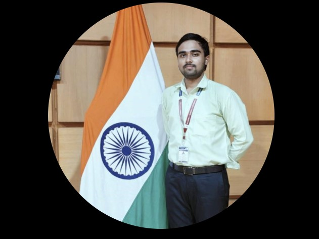

Nirmalya Sinha
VLSI, FPGA Edge AI & Hardware Security Engineer
B.Tech Electronics Engineering (VLSI Design, 9.05 SGPA) at Rashtriya Raksha University • Summer Research Intern at IIT (BHU) Varanasi • Designing from ESP32 edge nodes and autonomous UAVs to SkyWater 130nm silicon.

Interactive Silicon Die • 1000 μm × 1000 μm
Steer the Clock Pulse Across the Chip
PicoRV32 Sky130 GDSII
1.00 mm² open-source RISC-V SoC @ 50 MHz (+13.76 ns setup slack), 24,441 logic cells, 0 Magic DRC & 0 Netgen LVS errors.
85.88 MB top.gds • 35.9 mW
Highlights & Milestones
Click any photo to view full-screen.
Track Record
Key Milestones
Founder & Lead Developer — LearnVLSI (VPlay & eSim)
Browser-based 90-day Verilog arena, interactive K-Map/FSM simulator & SkyWater 130nm RTL-to-GDSII pipeline.
PicoRV32 RISC-V SoC — Open-Source Sky130 RTL-to-GDSII Tape-Out
1.00 mm² die at 50 MHz (+13.76 ns setup slack), 24,441 logic cells, 0 Magic DRC & 0 Netgen LVS errors.
Summer Research Intern — IIT (BHU) Varanasi (VSSC Sponsored)
Deployed 99.7%+ accuracy motor-fault Edge AI models on PYNQ-Z2 and Xilinx ZCU-104 FPGAs under Dr. Priya Ranjan Muduli.
1st Runner Up (484 Participants) — IEEE CRAFTHON 2026
ArmourTrack: ESP32, RFID, GPS, RSA-signed QR & SHA-256 hash-chain defence asset accountability terminal.
Top 10 Finalist (~400 Participants) — SIH 2026 (PS 26025)
Trishuli: ~Rs. 1,100/node ESP8266 mesh + Raspberry Pi Edge ML mine-subsidence warning (94–97% accuracy, 0.2–0.3 ms latency).
3rd Rank (80 Teams) — HackTheSpring'26, GEC Gandhinagar
Secure POS System: Hardware authentication flow for tamper-resistant point-of-sale verification.
Showcased Autonomous UAV to Hon'ble Governor of Tamil Nadu
D_One (DroneVision → SWARM): Custom Pixhawk X-frame quadcopter & multi-drone Gazebo/MAVLink swarm testbed.
01 / WORKBENCH
Projects & Case Studies
Interactive Sky130 RTL-to-GDSII explorer, Logic Analyzer strip, and 14 hardware/software builds.
02 / BACKGROUND
About, Research & Skills
IIT (BHU) & RRU DFA research, leadership roles, certifications, and photo highlights.
03 / ARTIFACTS
Technical Vault
View CV, PicoRV32 31-page ASIC report, VSSC motor-fault papers, decks, and demos inline.